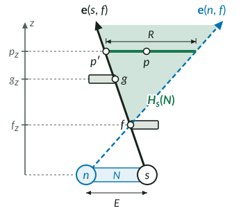
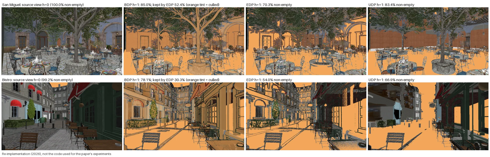
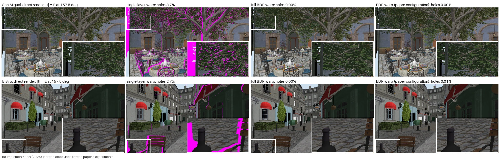

PVHVs mark what is hidden at the source view but may become visible within a bound of novel views — so depth peeling keeps only the fragments that can matter after warping.
Abstract
This paper presents the model and rendering algorithm of Potentially Visible Hidden Volumes (PVHVs) for multi-view image warping. PVHVs are 3D volumes that are occluded at a known source view, but potentially visible at novel views. Given a bound of novel views, we define PVHVs using the edges of foreground fragments from the known view and the bound of novel views. PVHVs can be used to batch-test the visibilities of source fragments without iterating individual novel views in multi-fragment rendering, and thereby, cull redundant fragments prior to warping. We realize the model of PVHVs in Depth Peeling (DP). Our Effective Depth Peeling (EDP) can reduce the number of completely hidden fragments, capture important fragments early, and reduce warping cost. We demonstrate the benefit of our PVHVs and EDP in terms of memory, quality, and performance in multi-view warping.
Method overview

(a) PVHV = hidden from s ∩ visible from nAfter Fig. 2: the volume Os hidden from the source view s, intersected with the volume Vn visible from a novel view n, is the PVHV Hs(n).

(b) PVHV from foreground edgesAfter Fig. 3(a): for novel views N spanning a distance E, the edge rays e(s, f) and e(n, f) through the inner blocker f bound the PVHV; at the depth of a point p it spans a segment of length R.

(c) Effective Depth PeelingAfter Sec. 4.1 and Fig. 7: depth peeling (BDP) keeps every fragment of the hidden layer h = 1; EDP keeps the fragments inside PVHVs and culls the rest.
- A PVHV is a 3D volume that is occluded at the known source view but potentially visible from novel views inside a given bound; it is defined from the edges of foreground fragments and that bound of novel views.
- PVHVs batch-test the visibility of source fragments without iterating over individual novel views, so redundant fragments are culled before warping.
- Effective Depth Peeling (EDP) realizes PVHVs in depth peeling: it reduces completely hidden fragments, captures important fragments early and reduces warping cost.
Interactive demo
Runs the 2026 re-implementation (WebGL2) in your browser on a CC0 chess set and a procedural blocks scene; without WebGL2 a notice is shown instead.
Results (re-implementation)
Rendered with the 2026 re-implementation on new 3D models; these are not the paper's figures or results.


About this re-implementation
The code, figures and interactive demo on this page come from an independent re-implementation written in 2026 from the published paper. They are not the code used for the paper's experiments, and they do not reproduce the paper's reported results. Code published by the Computer Graphics Lab at Sungkyunkwan University was not consulted.
Applications of the method, such as depth-of-field rendering, are described in the paper and are not implemented in this re-implementation.
The title, authors, venue, abstract and BibTeX are taken from the published paper's metadata in the ACM Digital Library and Crossref (doi:10.1145/3592108).
BibTeX
@article{kim2023pvhv,
author = {Kim, Janghun and Lee, Sungkil},
title = {Potentially Visible Hidden-Volume Rendering for Multi-View Warping},
year = {2023},
issue_date = {August 2023},
publisher = {Association for Computing Machinery},
address = {New York, NY, USA},
volume = {42},
number = {4},
issn = {0730-0301},
url = {https://doi.org/10.1145/3592108},
doi = {10.1145/3592108},
abstract = {This paper presents the model and rendering algorithm of Potentially Visible Hidden Volumes (PVHVs) for multi-view image warping. PVHVs are 3D volumes that are occluded at a known source view, but potentially visible at novel views. Given a bound of novel views, we define PVHVs using the edges of foreground fragments from the known view and the bound of novel views. PVHVs can be used to batch-test the visibilities of source fragments without iterating individual novel views in multi-fragment rendering, and thereby, cull redundant fragments prior to warping. We realize the model of PVHVs in Depth Peeling (DP). Our Effective Depth Peeling (EDP) can reduce the number of completely hidden fragments, capture important fragments early, and reduce warping cost. We demonstrate the benefit of our PVHVs and EDP in terms of memory, quality, and performance in multi-view warping.},
journal = {ACM Trans. Graph.},
month = jul,
articleno = {86},
numpages = {11},
keywords = {potentially visible hidden volume, visibility, multi-fragment rendering, depth peeling, view warping}
}